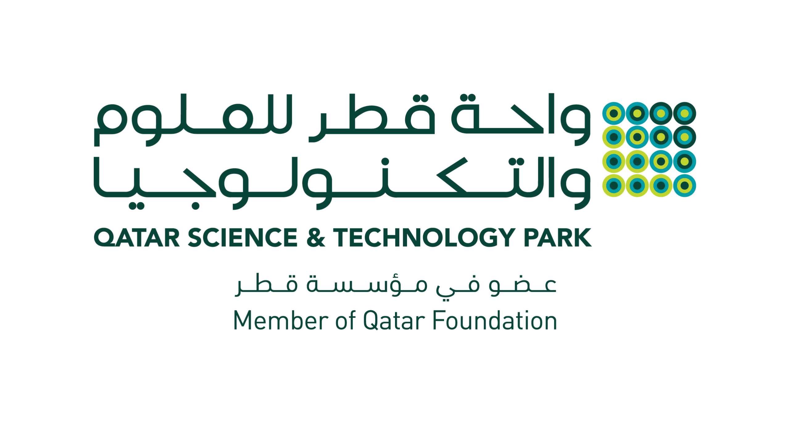
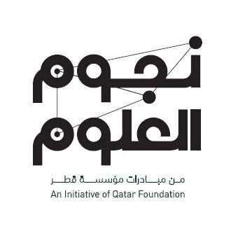

Research and Development Intern - Qatar Computing Research Institute
May 2026 - Present
Building an end-to-end job market intelligence platform under Dr. Hamdy Mubarak, processing 30K+ bilingual (EN/AR) job postings from Bayt.com and LinkedIn across Qatar, UAE, and Saudi Arabia.
Designed a hybrid RAG pipeline (text-to-SQL analytics, pandas statistics, vector search via Qdrant, and BM25 keyword search fused via Reciprocal Rank Fusion with cross-encoder reranking) for accurate counts, salary analytics, and semantic job-market queries.
Built an LLM-based query decomposition layer (Fanar/GPT) that classifies questions into structured filters, aggregation intents, and semantic queries, with grounding safeguards against hallucinated companies and statistics.
Architected a generic filter-registry system so new dashboard filters propagate automatically through SQL, pandas, and vector layers with zero pipeline changes, powering an interactive dashboard where clicking any chart drills into the data and scopes the chatbot to match.
Developed a FastAPI backend with SSE-streamed chat and a bilingual Next.js dashboard, cutting redundant LLM API calls per query by ~50% by sharing decomposition and SQL results across retrieval and generation.
Built an MCQ evaluation benchmark spanning EN/AR and all three countries, reaching 82.5% overall accuracy (83% EN, 82% AR).
AI Engineer Intern - Tata Consultancy Services
Apr 2026 - Jul 2026
Built LLM prototypes and internal AI tools, with ownership of retrieval quality, prompt design, response evaluation, and end-user experience.
HR Policy Chatbot: Built a full-stack RAG chatbot (React + Python) with a 3-stage query pipeline, intent classification (policy, chat, or off-topic), multi-turn query rewriting from the last 4 turns of conversation, and retrieval across 9 synthetic policy documents (HR, IT, Security, Expense, Travel, Leave, Remote Work, Offboarding, and Manager Guidelines).
Added bilingual (English/Arabic) responses with automatic language detection, LangSmith tracing for latency and cost visibility, and persistent Chroma indexing with a rebuild endpoint. Designed a 10-case LLM-as-judge rubric (faithfulness, relevance, completeness) scored by GPT-4o-mini, reaching 93% average accuracy.
Handwritten Hierarchy RAG: Extended Proxy-Pointer RAG to handwritten and scanned documents with a dual ingestion pipeline: a vision-language model (Llama-4 Scout via Groq) for handwriting OCR with an anti-hallucination fallback, and a LlamaParse layout-extraction path that recovers pixel-exact figure and table crops with bounding-box confidence filtering, auto-captioned for search.
Added LLM-based noise filtering to exclude boilerplate sections from the index, section-level retrieval through a parallel section store so answers return the full hierarchical section instead of an isolated chunk, and visual-intent-aware reranking that guarantees diagram and table sections surface when requested.
Marketing and Communication Intern - Lusail International Circuit
Nov 2025 - Dec 2025
Supported marketing and communications for Formula 1 and live motorsport events, coordinating promotions, audience engagement, and operational logistics at the circuit.
Student Research Program Researcher - University of Doha for Science and Technology
Sep 2025 - Present
Investigating whether open-source LLMs can triage emergency-department referrals by Emergency Severity Index, under Dr. Ahmad Abdel-Hafez. Presented at the 1st SRP Showcase (AY 2025/26); research paper in progress.
Evaluated four open-source LLMs (Gemma-3, MedGemma, Mistral, Qwen3) served locally via vLLM on 4× NVIDIA L4 GPUs against classical ML baselines over 331 MIMIC-IV-ED records.
Best LLM (Gemma-3 + few-shot) reached 73.4% accuracy, surpassing human triage (58–59%) and the best classical baseline (XGBoost, 67.7%).
Showed that iterative prompt calibration meaningfully shifts the safety profile and reduces under-triage.
Tech Intern - Experience Tours and Events Services
Jul 2025 - Aug 2025
Analyzed customer survey data to surface business insights, improved SEO across 80+ tour listings, and coordinated technical integration of CRM and IVR systems.
Administrative Support Assistant - Pride Deal
Jun 2024 - Aug 2024
Managed invoices, quotations, delivery tracking, reporting, order processing, supplier communication, and spreadsheet-based workflow improvements.
Projects
Multi-Agent Sepsis Early Warning System
Private-code healthcare AI capstone for interpretable ICU decision support. The system combines MIMIC-IV structured clinical data and clinical notes, an XGBoost sepsis risk model, SHAP explanations, RAG over patient context, and a multi-agent reasoning layer for evidence-grounded clinical summaries.
Built with specialized agents for explanation, recommendation support, orchestration, and safety validation. Guardrails block prescriptive or overconfident wording, check grounding and structure, retry unsafe outputs, and add a decision-support disclaimer before display.
Voice-based interview and viva practice platform. Upload course notes or a job description and a live AI voice agent runs a real spoken interview grounded in that material, then scores the transcript against a rubric, breaks down each answer, and keeps chatting about how you did.
Built on LiveKit Agents with Deepgram speech, a Groq LLM, Pinecone retrieval, interviewer personas, browser and server side attention tracking with MediaPipe, and a Next.js frontend over a FastAPI backend.
Agentic STEM build studio that turns a teacher's lesson goal into a safe, verified, age-appropriate engineering build. An orchestrator extracts design intent with Fanar, maps it to canonical requirements, searches a verified module registry, runs deterministic safety, budget, circuit, and code validation, then composes a full Build Pack.
Ships bilingual tutoring, guided step-by-step build mode, rule-based troubleshooting with confidence levels, a scored quiz, and an exportable teacher report. Every request resolves to an honest state rather than a hallucinated project.
Voice and vision enabled agentic tutor built for the Fanar Hackathon at QCRI. A student shares their screen, asks out loud, and a multi-agent workflow checks safety, routes the request, reads the screenshot, explains the concept, draws circles and labels directly on the image, and speaks the answer back in Arabic or English.
Conditional agent graph over a shared state with Fanar and OpenAI provider failover, Pillow annotation rendering, and a live agent trace view in the UI.
Agentic closed-loop hiring system built for the QSTP Internship Hackathon where every nomination reaches a decision. Runs on a deterministic finite state machine with an append-only event log, so all state is verifiable and rebuildable, while LLMs stay scoped to language tasks and out of the hiring decision itself.
Dual approval gates enforce human confirmation before any proposal becomes an offer, at both the graph and state-machine level, and a tunable Decision Debt metric tracks bottlenecks across stages, overdue decisions, and unrecorded offers. Ships five surfaces from a control tower to tokenized candidate and startup pages, running fully offline on SQLite for the demo.
Chat with any public GitHub repository. Paste a URL and ask questions about the codebase, and the app pulls the repo structure and README, feeds them to GPT-4o mini, and returns grounded explanations. Includes URL validation, per-user rate limiting, and content truncation to keep API cost in check.
End-to-end local recruitment assistant that screens CVs, ranks candidates with TF-IDF and embeddings, retrieves evidence for decisions, generates interview questions, and answers recruiter queries, all running offline with Ollama.
Automated research curation tool that pulls recent arXiv papers by topic, uses an LLM to rank relevance, generates daily digests, and persists results in a hybrid SQLite + Chroma store for full-text and semantic search.
Full-stack decision support tool for crop stress and food security that ingests live environmental data, scores risk, generates forecasts, and routes reasoning through a LangGraph agent, served via FastAPI with a Next.js frontend.
Hazard prediction system for construction sites that classifies risk from free-text work descriptions using XGBoost, retrieves semantically similar past incidents with sentence transformers, and surfaces targeted safety recommendations.
Production-ready credit risk API that engineers financial features from raw loan data, balances classes with SMOTE-Tomek, tunes an XGBoost classifier with Optuna to AUC 0.98, and serves real-time risk scores via FastAPI.
Indoor positioning system using Wi-Fi fingerprinting that predicts building, floor, and coordinates from RSSI signal patterns with PCA, KNN, and CNN models, hitting 99.85% floor-level accuracy.
Time-series forecasting of global GHG emissions, modeling sector-level trends with ARIMA and Random Forest, with focused analysis on Qatar and top-emitting countries, including feature engineering and trend visualizations.
Deployed Streamlit tool that parses Festo LVDAC-EMS oscilloscope exports, computes no-load and short-circuit equivalent circuit parameters, estimates efficiency at a chosen operating point, and flags measurement confidence using dominant frequency, RMS drift, and harmonic distortion checks. Renders waveform, FFT, phasor, and equivalent circuit views.
Regression pipeline that predicts annual insurance premiums from patient health data, with medical-history risk scoring, VIF-based feature selection, and Linear, Ridge, and XGBoost models compared on RMSE. Error analysis by demographic segment showed most large errors came from users under 25, so a dedicated submodel was trained for that group and served through a Streamlit app.
Temperature and humidity forecasting on live indoor sensor data collected through Arduino IoT Cloud. Covers interpolation of missing readings, IQR outlier removal, and feature engineering with lag values, rolling means, and cyclical time encodings, then benchmarks Random Forest and XGBoost against ARIMA and SARIMA. Random Forest gave the lowest error at RMSE 0.008 on temperature.
Statistical study of global tsunami events linking earthquake characteristics to damage and casualties, using chi-square tests, ANOVA, and OLS regression alongside SARIMA forecasting with ACF/PACF diagnostics and seasonal decomposition. Magnitude came out a significant predictor of tsunami intensity while explaining little variance, so the write-up focuses on uncertainty rather than point predictions. Paired with a Power BI dashboard for the exploratory views.
Hypothesis TestingOLSSARIMAPower BI
Education
BASc, Data Science and Artificial Intelligence - UDST
2022 - 2026
Focused on machine learning, predictive modeling, data engineering, applied statistics, visualization, and end-to-end AI application development.
Achievements

×

2nd Place, Build for QSTP Hackathon
Led team Echo to 2nd place and a Technical Track win with Post Pulse, an AI-powered marketing workspace unifying content creation, optimization, and campaign management across six social platforms. Selected as one of 10 teams to pitch; built a working prototype and delivered a live pitch in 48 hours.